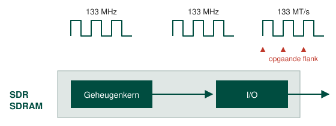
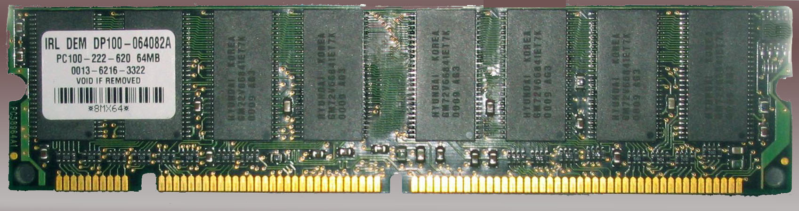

Synchrone geheugens werken op een bepaalde frequentie, meestal is dat dezelfde als die van de bus waarover de gegevens worden getransporteerd.
Typische SDR SDRAM frequenties zijn 100 MHz of 133 MHz. Bij Single Data Rate SDRAM wordt enkel de opgaande flank of rising edge gebruikt. Dit betekent dat lezen en schrijven naar het RAM geheugen gebeurt op het ritme van de klok maar dit is uiteraard enkel bij een opgaande flank.

Op onderstaande afbeelding kan je twee dingen afleiden: de frequentie is 100 MHz (PC100) en de capaciteit is 64 MB.

SDR SDRAM is ondertussen reeds lang achterhaald, dit type geheugen kan je niet meer terugvinden in de winkel.